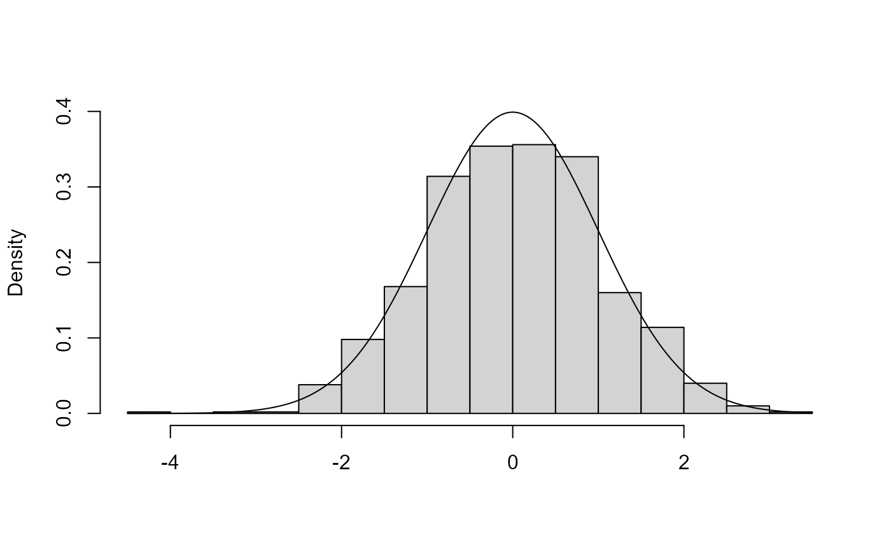
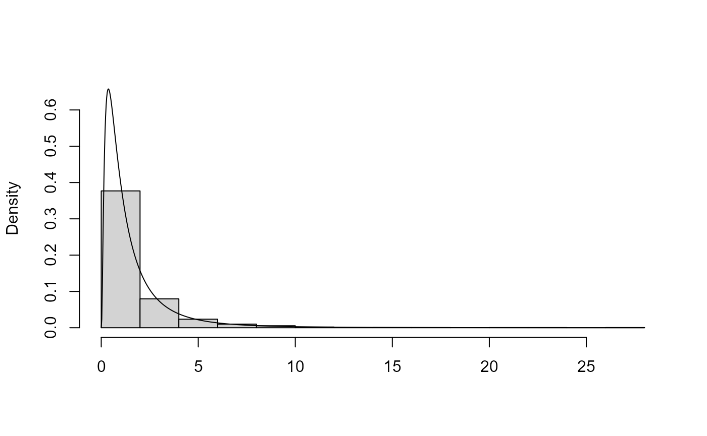
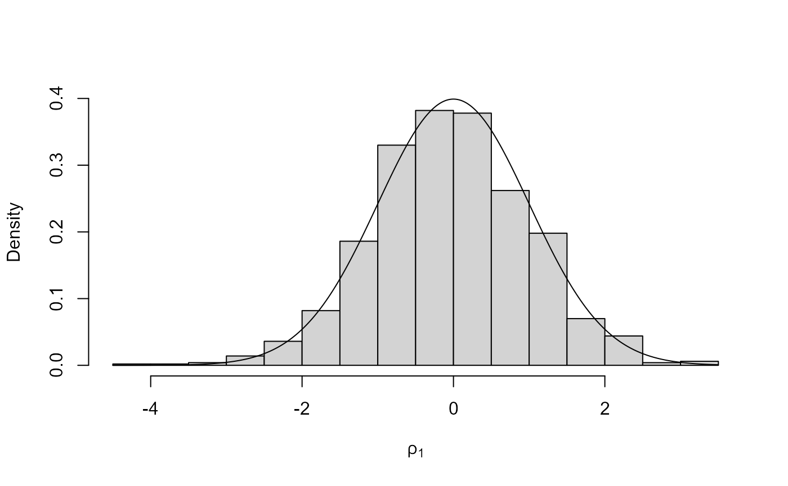
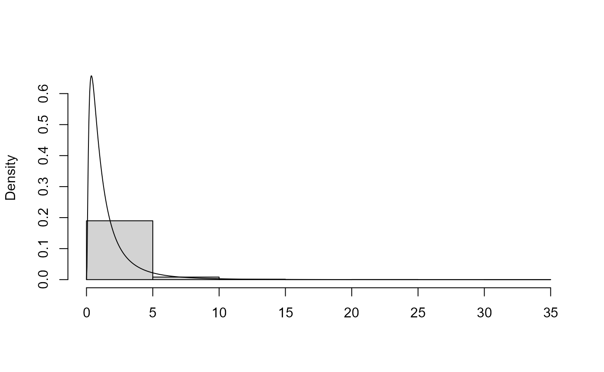
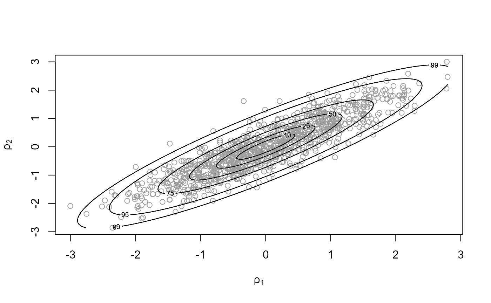
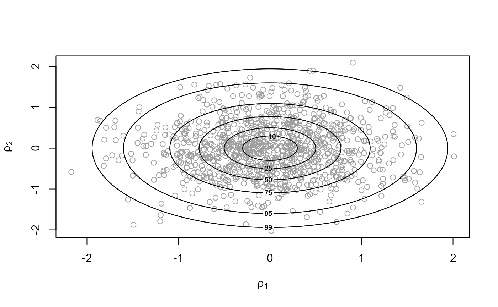
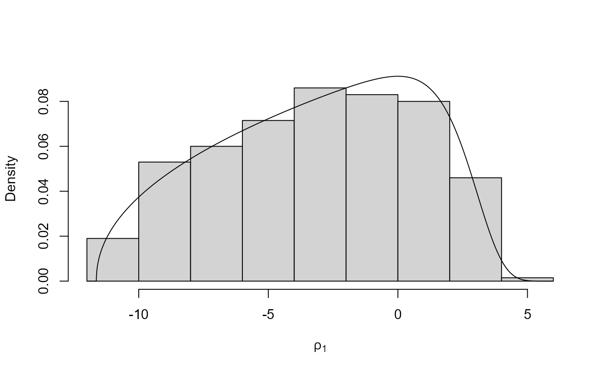

vignettes/ex1revdbayes.Rmd
ex1revdbayes.Rmdex1revdbayes.Rmd in RstudioThere is further information in the Introduction to rust vignette.
# We need the rust and mvtnorm packages
pkg <- c("rust", "mvtnorm")
pkg_list <- pkg[!pkg %in% installed.packages()[, "Package"]]
install.packages(pkg_list)
# Load both packages
invisible(lapply(pkg, library, character.only = TRUE))
# Information about the ru() function
?ru
# Simulation sample size
n <- 1000
# By default r = 1/2
# init is an initial estimate of the mode of logf
x1 <- ru(logf = dnorm, log = TRUE, d = 1, n = n, init = 0.1)
x1$pa## [1] 0.8
plot(x1)
# r = 1 will be slightly less efficient
x2 <- ru(logf = dnorm, log = TRUE, d = 1, n = n, init = 0.1, r = 1)
x2$pa## [1] 0.7251632
# lower = 0 tells ru() that the log-normal is bounded below at 0
x1 <- ru(logf = dlnorm, log = TRUE, d = 1, n = n, lower = 0, init = 1)
x1$pa## [1] 0.5633803
plot(x1)
# We know that ln(X) is normal.
# First transform using a Box-Cox transformation with lambda=0 then simulate
lambda <- 0
x2 <- ru(logf = dlnorm, log = TRUE, d = 1, n = n, init = 0.1, trans = "BC",
lambda = lambda)
x2$pa## [1] 0.7824726
# Plot the (normal) distribution from which we have simulated using ROU
plot(x2, ru_scale = TRUE)
# A check that the inverse (exponential) transformation has been applied
plot(x2)
# two-dimensional normal with positive association ----------------
rho <- 0.9
covmat <- matrix(c(1, rho, rho, 1), 2, 2)
x1 <- ru(logf = mvtnorm::dmvnorm, sigma = covmat, log = TRUE, d = 2, n = n,
init = c(0, 0), rotate = FALSE)
x2 <- ru(logf = mvtnorm::dmvnorm, sigma = covmat, log = TRUE, d = 2, n = n,
init = c(0, 0), rotate = TRUE)
c(x1$pa, x2$pa)## [1] 0.2300966 0.5227392
plot(x1, ru_scale = TRUE)
plot(x2, ru_scale = TRUE)
# Exponential case, with strong skewness
# A cube root transformation results in approximate symmetry
alpha <- 1
x1 <- ru(logf = dgamma, shape = alpha, log = TRUE, d = 1, n = n, trans = "BC",
lambda = 1/3, init = alpha)
x1$pa## [1] 0.7861635
# If alpha < 1 then the gamma density is extremely skewed and unbounded at 0
# A transformation can avoid this, but it needs to be stronger than a cube root
alpha <- 0.1
x2 <- ru(logf = dgamma, shape = alpha, log = TRUE, d = 1, n = n, trans = "BC",
lambda = 0.068, init = 0)
x2$pa## [1] 0.7668712
plot(x2)
plot(x2, ru_scale = TRUE)
# Pick a standard distribution
?Distributions
# Change dnorm to a d???? of your choice below
# Perhaps also set lower, upper or init
x <- ru(logf = dnorm, log = TRUE, n = n)## Warning in ru(logf = dnorm, log = TRUE, n = n): No initial estimate of the mode given: a vector of ones has
## been used